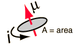
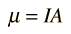

Magnetic Dipole Moment
From the expression for the torque on a current loop, the characteristics of the current loop are summarized in its magnetic moment
|  | . |
The magnetic moment can be considered to be a vector quantity with direction perpendicular to the current loop in the right-hand-rule direction. The torque is given by

As seen in the geometry of a current loop, this torque tends to line up the magnetic moment with the magnetic field B, so this represents its lowest energy configuration. The potential energy associated with the magnetic moment is
so that the difference in energy between aligned and anti-aligned is
These relationships for a finite current loop extend to the magnetic dipoles of electron orbits and to the intrinsic magnetic moment associated with electron spin. Also important are nuclear magnetic moments.
Magnetic force applications
Magnetic field concepts
| HyperPhysics***** Electricity and Magnetism | R Nave |